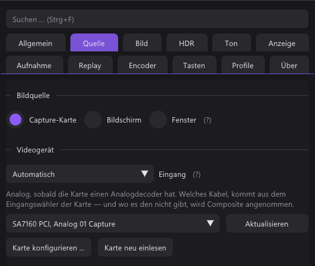
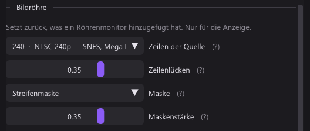
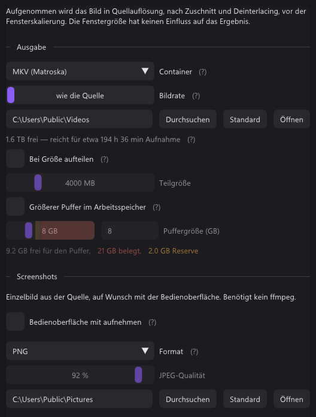

Kurz gesagt
Verglichen mit PotPlayer 1.7.23164 und seinen Einstellungen, dazu Foren.
| qBlank | PotPlayer | |
|---|---|---|
| Quellcode | Offen, GPLv3 | Geschlossene Freeware, von Kakao |
| Gemacht für | Spielen über eine Karte, einen Bildschirm oder ein Fenster, und das Aufnehmen | Videodateien; eine Karte ist eine Quelle von vielen |
| Download | Eine Datei, etwa 3 MB | Etwa 50 MB, Installer oder portabel |
| Anzeige | Eigener Renderer, Direct3D 11 oder Vulkan | Ein Renderer nach Wahl; ab Werk der eingebaute Direct3D 11, daneben unter anderem EVR, VMR9 und madVR |
| Format der Karte | Gewählt und an die Videonorm angepasst | Aus einer Liste gewählt, oder Default |
| Videonorm | Automatisch gefunden | Nicht erkannt |
| Deinterlacing | An jedem Bild gemessen | Ab Werk bewegungsadaptiv, oder das der GPU |
| Composite-Dot-Crawl | Filter eingebaut | – |
| Bildschirm und Fenster | Monitor oder Fenster | Ein Bereich, ein Fenster, oder Spielaufnahme für Direct3D 9 bis 12, OpenGL und Vulkan |
| Aufnahme | MKV, MP4, AVI; H.264, H.265, AV1, verlustfrei | MKV, MP4, AVI, WMV, WebM und mehr; H.264 über NVENC, Quick Sync, AMF oder OpenH264 |
| Replay-Puffer | Arbeitsspeicher oder Platte, bis 30 Minuten | – |
| Virtuelle Kamera | 64 Bit, HDR | – |
| Systeme | Windows 10 und 11, 64 Bit | Windows, 64 Bit und ARM64 |
Die beiden Projekte
PotPlayer
- Von Kakao, früher als Daum PotPlayer. Freeware, Quellcode geschlossen.
- 1.7.23164 erschien am 21. Oktober 2026. Laut Changelog sind seitdem Direct3D-11-Video und WASAPI-Ton der Standard.
- Zuerst ein Player: Dateien, Streams, Untertitel. Geräte sind eine weitere Art von Quelle.
- Etwa 50 MB, als Installer oder portabel. Für 64-Bit-Windows und ARM64.
qBlank
- Quelloffen unter GPLv3. Code, Issues und Releases liegen auf GitHub.
- Deutsch und Englisch, mit Handbuch in beiden.
- Eine Datei von etwa 3 MB, über winget, die Website oder GitHub.
- Zum Aufnehmen braucht es ffmpeg. qBlank bietet an, es zu laden, aus einer festen Quelle, gegen seinen Hash geprüft.
- Updates werden beim Start gesucht, wenn man will.
Capture Card: Anzeige
PotPlayer: ein Renderer nach Wahl
- PotPlayer zeichnet über den Videorenderer, den man wählt. Seit 1.7.23164 ist der eingebaute Direct3D-11-Renderer der Standard.
- EVR, VMR9 und madVR gehören zu den anderen.
- Das Bild der Karte läuft durch dieselbe Kette wie eine Videodatei.
qBlank: eigener Renderer
- qBlank zeichnet das Bild selbst, mit Direct3D 11 oder Vulkan. Anzeige → Grafikschnittstelle wählt eins.
- Jedes Bild wird gezeichnet, wenn es ankommt, in der Rate der Quelle. Ein noch nicht gezeichnetes Bild wird vom nächsten ersetzt, nie dahinter eingereiht.
- Ein Bild Warteschlange in der Swapchain, Tearing erlaubt, VSync ab Werk aus.
- Bildschirmaufnahmen, Remote Play und OBS sehen qBlanks Fenster wie jedes andere.
F1 zeigt, was qBlank selbst beiträgt: Durchlauf ist die Zeit von der Ankunft eines Bildes in qBlank, bis es qBlank verlässt. Etwa 1 ms bei 1080p60. Karte und Monitor kommen noch dazu.

Capture Card: Einrichtung
PotPlayer: die Geräteeinstellungen
- Open Webcam/Other Device öffnet die Karte.
- Die Geräteeinstellungen (Alt+D) haben je einen Reiter für Webcam, Analog TV, Digital TV und Screen Capture.
- Eine Karte wird unter Webcam eingerichtet: das Gerät, seine Art und das Format. Das Format ist Default oder eine der aufgelisteten Größen und Raten.
qBlank: ans Signal angepasst
- Quelle listet, was die Karte anbietet: Farbformat, Auflösung und Bildrate.
- Auflösung an die Videonorm anpassen ist ab Werk an: passt die Auflösung nicht, etwa 720×480 bei PAL, stellt qBlank die richtige selbst ein.
- Rate des Signals nimmt 50 Hz bei PAL, 59,94 bei NTSC, 60 bei PAL 60.
- Werte von Hand eingeben gibt es für Formate, die eine Karte nicht auflistet.
- NV12 und P010 ebenso wie YUY2, UYVY und RGB. 10 Bit bleibt 10 Bit, HDR bleibt HDR.

Bei beiden bedient eine Karte nur ein Programm zur Zeit.
Capture Card: Ton
PotPlayer
- Use audio capture device nimmt den Ton von dem Aufnahmegerät, das darunter gewählt ist.
- Preview audio spielt ihn ab.
- Seit 1.7.23164 läuft der Ton ab Werk über den WASAPI-Renderer.
qBlank
- Jedes Format, das die Karte schickt. qBlank wandelt es in das, was das Gerät spielt.
- Tonpuffer von 5 bis 200 ms, ab Werk 30.
- Exclusive Mode umgeht den Windows-Mixer für weniger Verzögerung. Das Gerät ist dann für andere Programme gesperrt.
- A/V-Versatz verschiebt Ton oder Bild bei der Wiedergabe um bis zu 200 ms, für einen Fernseher oder ein Headset mit eigener Verzögerung. Die Aufnahme bleibt davon unberührt.
- M schaltet stumm, + und - regeln die Lautstärke. Beides lässt die Aufnahme in Ruhe.
- Mikrofone und andere Eingänge kommen als eigene Quellen in die Aufnahme. Siehe Aufnahme.

Analoge Konsolen
| qBlank | PotPlayer | |
|---|---|---|
| Videonorm | PAL, NTSC oder SECAM automatisch gefunden, folgt einem Wechsel zwischen 50 und 60 Hz | Nicht erkannt |
| Deinterlacing | An jedem Bild gemessen; Aus (Weave), Bob, Bob (interpoliert), Bewegungsadaptiv, Kantenorientiert, YADIF | Ab Werk bewegungsadaptiv, oder das der GPU |
| Composite-Dot-Crawl | Fünf Filter, nebeneinander zu vergleichen | – |
Deinterlacing
qBlank misst jedes Bild. Mit Nur bei interlaced Quellen anwenden darf der Deinterlacer anbleiben: 240p geht unberührt durch, 480i und 576i werden deinterlaced. Auch die Halbbildreihenfolge wird gemessen.

Videonorm
Eine Karte auf NTSC zeigt eine PAL-Konsole schwarzweiß oder mit wandernden Farben. qBlank probiert die Normen selbst durch, bis die Farbe einrastet. F7 prüft am aktuellen Bild noch einmal.

Composite
Composite trägt die Farbe in der Helligkeit, das hinterlässt wandernde Punkte an Kanten. qBlank hat fünf Filter dagegen; sie erscheinen nur an einem Composite-Eingang. F12 teilt das Bild in aus und an, F11 hält es an.

Pixelgrafik und Röhre
- Natives Pixelraster: man wählt, wie viele Pixel die Konsole pro Zeile zeichnet, 256 bei einem SNES. Jedes Konsolenpixel wird dann ein scharfer Block.
- Sharp Bilinear hält Pixel bei jedem Faktor scharf und gleich breit. Integer-Skalierung steht beim Seitenverhältnis.
- Zeilenlücken, Röhrenmaske und Pixelraster gelten nur für die Anzeige. Aufnahmen, Screenshots und die Kamera bekommen das Bild ohne sie.

Bildschirm und Fenster
| qBlank | PotPlayer | |
|---|---|---|
| Was es nimmt | Einen ganzen Monitor, oder ein Fenster | Einen Bereich, ein Fenster, oder ein Spiel |
| Teil des Bildschirms | – | Ein Bereich |
| Spiele | Im Fenster, über Windows.Graphics.Capture | Spielaufnahme für Direct3D 9 bis 12, OpenGL und Vulkan |
PotPlayer
- Screen Capture ist ein Reiter der Geräteeinstellungen, neben der Karte.
- Es nimmt einen Bereich des Bildschirms, ein Fenster, oder ein Spiel über seine Grafikschnittstelle.
qBlank
- Bildschirm nimmt einen ganzen Monitor, Fenster ein Fenster, Spiele und Videos eingeschlossen.
- Ein verdecktes Fenster kommt durch. Ein minimiertes nicht.
- Ändert sich der Titel oder ist das Fenster weg, nimmt qBlank ein anderes Fenster desselben Programms.
- Der Rahmen wird immer abgeschnitten.
- Jedes neue Bild wird sofort gezeichnet. Aufnahme → Bildrate auf wie die Quelle behält alle, oder deckelt sie.
- Systemton ohne qBlank nimmt alles außer qBlanks eigener Wiedergabe. qBlank bleibt hörbar, und nichts hallt doppelt.
- qBlank auf der Aufnahme verbergen ist beim Bildschirm ab Werk an. Es hält qBlank aus jeder Bildschirmaufnahme heraus, auch aus Remote Play und Remotedesktop.
- Vorschau aus zeigt eine kleine Anzeige mit Auflösung, Bildrate und Aufnahmezeit und zeichnet seltener.


Aufnahme
| qBlank | PotPlayer | |
|---|---|---|
| Container | MKV, MP4; AVI für verlustfrei | MKV, MP4, AVI, WMV, WebM und mehr |
| Video-Codecs | H.264 über NVENC, Quick Sync, AMF oder x264; H.265 über NVENC, Quick Sync, AMF oder x265; AV1 über NVENC, Intel Arc, AMD oder SVT-AV1 | H.264 über NVENC, Quick Sync, AMF oder OpenH264, unter anderem |
| Verlustfrei | H.265 verlustfrei über NVENC, UT Video, unkomprimiertes RGB | Huffyuv, unkomprimiertes RGB oder YUV |
| Ton-Codec | AAC mit 96 bis 320 kbit/s; PCM in AVI | AAC, PCM, FLAC, oder keiner |
| Was aufgenommen wird | Das Bild wie angezeigt; Ohne Filter für die Bilder der Karte | Die laufende Quelle, nicht der Bildschirm |
| Größe und Rate | Die der Quelle, oder eine feste Höhe und eine Obergrenze | Original, oder eingestellt |
| Tonquellen | Karte, Eingänge, Ausgänge, System ohne qBlank; Verstärkung bis +12 dB | Der Ton der laufenden Quelle |
| Spuren | Gemischt, getrennt oder beides | – |
| Pause | Eigene Taste, eine Datei ohne Lücke | Pausiert die Wiedergabe, pausiert auch die Aufnahme |
| Replay-Puffer | Arbeitsspeicher oder Platte, 5 s bis 30 min | – |
| Marker | MKV, MP4 und Clips | – |
PotPlayer
- Alt+C, oder Rechtsklick → Video → Video Recording, öffnet die Aufnahme.
- Dort werden ein Ordner und ein Präfix für den Dateinamen gesetzt. Video steht ab Werk auf 2.000 kbps.
qBlank
- Der Encoder läuft in qBlank, über die Bibliotheken von ffmpeg. Mit NVENC und AMF geht das Bild ohne Kopie von der GPU zum Encoder.
- Ändern sich Größe oder Videonorm während einer Aufnahme, beginnt nahtlos eine neue Datei.
- Replay-Puffer und Aufnahme teilen einen Encoder. Umschalt+F9 speichert die letzten Minuten als Clip.
- Marker: Strg+Umschalt+F9 setzt einen, Player zeigen sie als Kapitel.



Screenshots und virtuelle Kamera
| qBlank | PotPlayer | |
|---|---|---|
| Screenshot-Formate | PNG, JPEG, JPEG XR, AVIF | JPEG, PNG, BMP, WebP |
| Virtuelle Kamera | Eingebaut, eine DirectShow-Quelle für 64-Bit-Programme | – |
| Kamera-Formate | NV12; P010 mit PQ für HDR | – |
In PotPlayer heißt Video capture, Bilder als Dateien zu speichern. Ein Video nimmt Video Recording auf.

Was Nutzer über PotPlayer berichten
Aus Foren. Kaum jemand bewertet einen Player als Aufnahmeprogramm, daher gibt es wenig.
- MKV-Aufnahmen kamen kaputt heraus oder ließen sich nicht öffnen.
- Eine USB-Karte gab ein Bild, aber keinen Ton.
- Ein Nutzer fand VMR9 im Fenster mit etwas weniger Verzögerung als Direct3D 11.
Nur in PotPlayer
- Ein vollständiger Player: Dateien, Streams, Untertitel.
- TV-Tuner, analog und digital.
- Spielaufnahme für Direct3D 9 bis 12, OpenGL und Vulkan.
- Ein Bereich des Bildschirms.
- Eine Auswahl an Renderern, madVR eingeschlossen.
- Mehr Container, darunter WMV und WebM, dazu FLAC.
- Screenshots als WebP oder BMP.
- ARM64.
Nur in qBlank
- Quelloffen.
- Videonorm, Interlacing, Halbbildreihenfolge und Farbbereich aus dem Bild gemessen.
- Composite-Filter mit Vergleich nebeneinander.
- Das Pixelraster der Konsole.
- Mikrofone und Systemton in der Aufnahme, auf eigenen Spuren.
- Replay-Puffer im Arbeitsspeicher oder auf der Platte, bis 30 Minuten, und Marker.
- Eine virtuelle 64-Bit-Kamera mit qBlanks vollem Bild, HDR eingeschlossen.
- qBlank aus der eigenen Bildschirmaufnahme verborgen.
- F1 zeigt qBlanks eigene Zeit pro Bild.